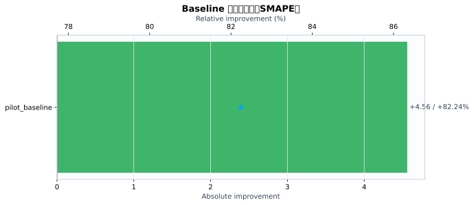
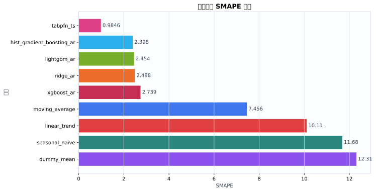
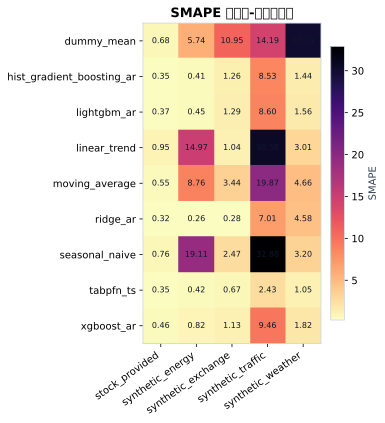
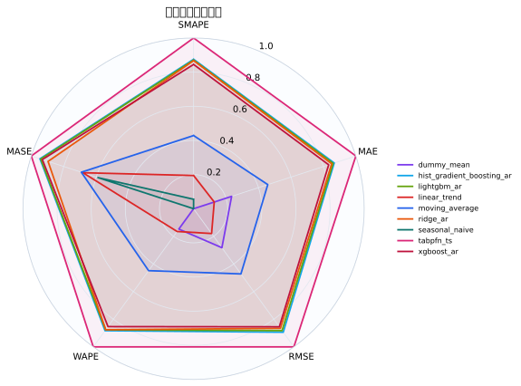
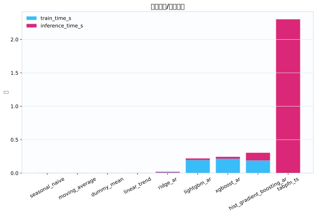
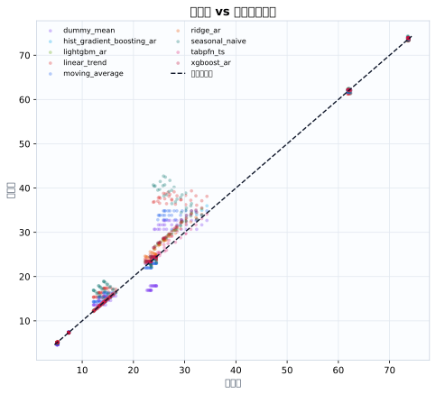
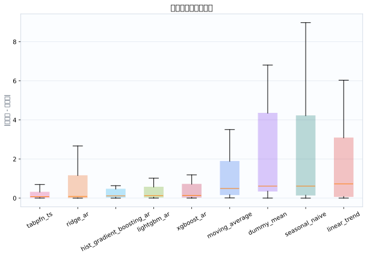

数据集5
模型9
指标行数45
预测行数1512
结论摘要
- 主指标 SMAPE 下，当前 run 的最佳模型是 tabpfn_ts，平均值为 0.9846。
- 相对 baseline pilot_baseline，当前最佳模型在 SMAPE 上提升 82.24% （absolute=+4.56）。
核心指标卡片
SMAPE
0.9846
最佳模型: tabpfn_ts
GPU_MEMORY_MB
0
最佳模型: dummy_mean
INFERENCE_TIME_S
0.003604
最佳模型: seasonal_naive
MAE
0.2401
最佳模型: tabpfn_ts
MASE
0.5291
最佳模型: tabpfn_ts
MSE
0.1976
最佳模型: tabpfn_ts
RMSE
0.3132
最佳模型: tabpfn_ts
TRAIN_TIME_S
0
最佳模型: tabpfn_ts
Baseline 对比
| baseline | metric | current_model | current_value | baseline_model | baseline_value | absolute_difference | relative_improvement_pct |
|---|---|---|---|---|---|---|---|
| pilot_baseline | smape | tabpfn_ts | 0.9846 | ridge_ar | 5.545 | 4.56 | 82.24 |
动态交互图表
指标排名动态图
残差直方图
效率-精度散点图
数据集排名轨迹
Matplotlib 可视化图表
Baseline 改变量图
{kind=link}

Baseline/模型平均指标柱状图
{kind=link}

数据集-模型热力图
{kind=link}

多指标雷达图
{kind=link}

运行时间图
{kind=link}

真实值-预测值散点图
{kind=link}

残差箱线图
{kind=link}

训练过程曲线
N/A：当前 run 目录未发现 loss/accuracy/TensorBoard/wandb 训练曲线文件。
错误分析与样本分析
当前支持预测任务的残差与真实-预测散点分析；分类 confusion matrix / ROC / PR 曲线需要真实分类输出后自动启用。
原始 Metrics
| run_id | model | dataset | domain | horizon | context_length | mse | mae | rmse | smape | wape | mase | train_time_s | inference_time_s | gpu_memory_mb |
|---|---|---|---|---|---|---|---|---|---|---|---|---|---|---|
| tabpfn_ts_20260528_154830 | dummy_mean | synthetic_energy | energy | 12 | 96 | 0.8464 | 0.8118 | 0.92 | 5.737 | 5.762 | 1.792 | 0.0004302 | 0.003634 | 0 |
| tabpfn_ts_20260528_154830 | seasonal_naive | synthetic_energy | energy | 12 | 96 | 11.04 | 2.965 | 3.322 | 19.11 | 21.05 | 6.546 | 0.0002921 | 0.003279 | 0 |
| tabpfn_ts_20260528_154830 | moving_average | synthetic_energy | energy | 12 | 96 | 2.088 | 1.264 | 1.445 | 8.756 | 8.973 | 2.791 | 0.0002884 | 0.003347 | 0 |
| tabpfn_ts_20260528_154830 | linear_trend | synthetic_energy | energy | 12 | 96 | 5.705 | 2.25 | 2.389 | 14.97 | 15.97 | 4.968 | 0.000325 | 0.003771 | 0 |
| tabpfn_ts_20260528_154830 | ridge_ar | synthetic_energy | energy | 12 | 96 | 0.002388 | 0.03717 | 0.04887 | 0.2612 | 0.2638 | 0.08206 | 0.008949 | 0.009263 | 0 |
| tabpfn_ts_20260528_154830 | hist_gradient_boosting_ar | synthetic_energy | energy | 12 | 96 | 0.005036 | 0.05639 | 0.07097 | 0.4084 | 0.4002 | 0.1245 | 0.2429 | 0.1311 | 0 |
| tabpfn_ts_20260528_154830 | lightgbm_ar | synthetic_energy | energy | 12 | 96 | 0.006311 | 0.06346 | 0.07944 | 0.453 | 0.4505 | 0.1401 | 0.239 | 0.02656 | 0 |
| tabpfn_ts_20260528_154830 | xgboost_ar | synthetic_energy | energy | 12 | 96 | 0.01943 | 0.1153 | 0.1394 | 0.818 | 0.8187 | 0.2546 | 0.236 | 0.03405 | 0 |
| tabpfn_ts_20260528_154830 | tabpfn_ts | synthetic_energy | energy | 12 | 96 | 0.004674 | 0.05811 | 0.06836 | 0.4222 | 0.4125 | 0.1283 | 0 | 3.367 | 0 |
| tabpfn_ts_20260528_154830 | dummy_mean | synthetic_traffic | traffic | 12 | 96 | 21.6 | 4.123 | 4.647 | 14.19 | 14.81 | 2.895 | 0.0004481 | 0.003247 | 0 |
| tabpfn_ts_20260528_154830 | seasonal_naive | synthetic_traffic | traffic | 12 | 96 | 145.5 | 10.93 | 12.06 | 32.88 | 39.28 | 7.679 | 0.0002878 | 0.003282 | 0 |
| tabpfn_ts_20260528_154830 | moving_average | synthetic_traffic | traffic | 12 | 96 | 42.87 | 6.005 | 6.548 | 19.87 | 21.57 | 4.217 | 0.000277 | 0.003393 | 0 |
| tabpfn_ts_20260528_154830 | linear_trend | synthetic_traffic | traffic | 12 | 96 | 105.9 | 9.907 | 10.29 | 30.58 | 35.59 | 6.958 | 0.0002838 | 0.003752 | 0 |
| tabpfn_ts_20260528_154830 | ridge_ar | synthetic_traffic | traffic | 12 | 96 | 4.289 | 1.984 | 2.071 | 7.007 | 7.128 | 1.393 | 0.008817 | 0.009131 | 0 |
| tabpfn_ts_20260528_154830 | hist_gradient_boosting_ar | synthetic_traffic | traffic | 12 | 96 | 6.126 | 2.45 | 2.475 | 8.532 | 8.8 | 1.72 | 0.1685 | 0.1083 | 0 |
| tabpfn_ts_20260528_154830 | lightgbm_ar | synthetic_traffic | traffic | 12 | 96 | 6.209 | 2.477 | 2.492 | 8.596 | 8.901 | 1.74 | 0.1914 | 0.02943 | 0 |
| tabpfn_ts_20260528_154830 | xgboost_ar | synthetic_traffic | traffic | 12 | 96 | 7.632 | 2.745 | 2.763 | 9.463 | 9.863 | 1.928 | 0.2269 | 0.03252 | 0 |
| tabpfn_ts_20260528_154830 | tabpfn_ts | synthetic_traffic | traffic | 12 | 96 | 0.8218 | 0.6971 | 0.9065 | 2.433 | 2.504 | 0.4895 | 0 | 2.485 | 0 |
| tabpfn_ts_20260528_154830 | dummy_mean | synthetic_weather | weather | 12 | 96 | 37.89 | 6.142 | 6.155 | 30.01 | 26.09 | 30 | 0.0004534 | 0.003251 | 0 |
| tabpfn_ts_20260528_154830 | seasonal_naive | synthetic_weather | weather | 12 | 96 | 0.7422 | 0.7493 | 0.8615 | 3.199 | 3.183 | 3.66 | 0.0003631 | 0.003356 | 0 |
| tabpfn_ts_20260528_154830 | moving_average | synthetic_weather | weather | 12 | 96 | 1.325 | 1.076 | 1.151 | 4.664 | 4.57 | 5.256 | 0.0003523 | 0.003213 | 0 |
| tabpfn_ts_20260528_154830 | linear_trend | synthetic_weather | weather | 12 | 96 | 0.7238 | 0.7104 | 0.8507 | 3.006 | 3.018 | 3.47 | 0.0003667 | 0.003434 | 0 |
| tabpfn_ts_20260528_154830 | ridge_ar | synthetic_weather | weather | 12 | 96 | 1.698 | 1.1 | 1.303 | 4.576 | 4.674 | 5.375 | 0.00864 | 0.008626 | 0 |
| tabpfn_ts_20260528_154830 | hist_gradient_boosting_ar | synthetic_weather | weather | 12 | 96 | 0.1414 | 0.3382 | 0.3761 | 1.441 | 1.437 | 1.652 | 0.147 | 0.09447 | 0 |
| tabpfn_ts_20260528_154830 | lightgbm_ar | synthetic_weather | weather | 12 | 96 | 0.2287 | 0.3673 | 0.4783 | 1.564 | 1.56 | 1.795 | 0.148 | 0.02097 | 0 |
| tabpfn_ts_20260528_154830 | xgboost_ar | synthetic_weather | weather | 12 | 96 | 0.3408 | 0.429 | 0.5838 | 1.822 | 1.822 | 2.096 | 0.2073 | 0.01421 | 0 |
| tabpfn_ts_20260528_154830 | tabpfn_ts | synthetic_weather | weather | 12 | 96 | 0.1124 | 0.2457 | 0.3352 | 1.051 | 1.044 | 1.2 | 0 | 1.336 | 0 |
| tabpfn_ts_20260528_154830 | dummy_mean | synthetic_exchange | economics | 12 | 96 | 0.2906 | 0.536 | 0.539 | 10.95 | 10.39 | 12.17 | 0.0003676 | 0.003178 | 0 |
| tabpfn_ts_20260528_154830 | seasonal_naive | synthetic_exchange | economics | 12 | 96 | 0.02396 | 0.1259 | 0.1548 | 2.473 | 2.44 | 2.858 | 0.0002816 | 0.003277 | 0 |
| tabpfn_ts_20260528_154830 | moving_average | synthetic_exchange | economics | 12 | 96 | 0.03386 | 0.1748 | 0.184 | 3.44 | 3.387 | 3.969 | 0.0002696 | 0.003342 | 0 |
| tabpfn_ts_20260528_154830 | linear_trend | synthetic_exchange | economics | 12 | 96 | 0.00343 | 0.05348 | 0.05857 | 1.036 | 1.037 | 1.215 | 0.0002694 | 0.003592 | 0 |
| tabpfn_ts_20260528_154830 | ridge_ar | synthetic_exchange | economics | 12 | 96 | 0.0002413 | 0.01425 | 0.01553 | 0.2764 | 0.2761 | 0.3236 | 0.00856 | 0.01075 | 0 |
| tabpfn_ts_20260528_154830 | hist_gradient_boosting_ar | synthetic_exchange | economics | 12 | 96 | 0.005929 | 0.06468 | 0.077 | 1.256 | 1.254 | 1.469 | 0.1766 | 0.1077 | 0 |
| tabpfn_ts_20260528_154830 | lightgbm_ar | synthetic_exchange | economics | 12 | 96 | 0.006204 | 0.06631 | 0.07877 | 1.288 | 1.285 | 1.506 | 0.1885 | 0.02067 | 0 |
| tabpfn_ts_20260528_154830 | xgboost_ar | synthetic_exchange | economics | 12 | 96 | 0.005293 | 0.05847 | 0.07275 | 1.134 | 1.133 | 1.328 | 0.1994 | 0.0302 | 0 |
| tabpfn_ts_20260528_154830 | tabpfn_ts | synthetic_exchange | economics | 12 | 96 | 0.001421 | 0.03437 | 0.0377 | 0.6664 | 0.6661 | 0.7804 | 0 | 2.175 | 0 |
| tabpfn_ts_20260528_154830 | dummy_mean | stock_provided | finance | 12 | 96 | 0.05013 | 0.1944 | 0.2239 | 0.676 | 0.4078 | 0.05503 | 0.0006928 | 0.005167 | 0 |
| tabpfn_ts_20260528_154830 | seasonal_naive | stock_provided | finance | 12 | 96 | 0.1452 | 0.2786 | 0.381 | 0.7645 | 0.5844 | 0.07886 | 0.0004065 | 0.004827 | 0 |
| tabpfn_ts_20260528_154830 | moving_average | stock_provided | finance | 12 | 96 | 0.07349 | 0.1996 | 0.2711 | 0.5478 | 0.4186 | 0.05649 | 0.0003715 | 0.004865 | 0 |
| tabpfn_ts_20260528_154830 | linear_trend | stock_provided | finance | 12 | 96 | 0.2116 | 0.3694 | 0.46 | 0.948 | 0.7748 | 0.1046 | 0.0003794 | 0.005248 | 0 |
| tabpfn_ts_20260528_154830 | ridge_ar | stock_provided | finance | 12 | 96 | 0.02924 | 0.1283 | 0.171 | 0.321 | 0.269 | 0.03631 | 0.01298 | 0.01302 | 0 |
| tabpfn_ts_20260528_154830 | hist_gradient_boosting_ar | stock_provided | finance | 12 | 96 | 0.03308 | 0.14 | 0.1819 | 0.3507 | 0.2937 | 0.03963 | 0.2121 | 0.131 | 0 |
| tabpfn_ts_20260528_154830 | lightgbm_ar | stock_provided | finance | 12 | 96 | 0.05152 | 0.1685 | 0.227 | 0.3689 | 0.3534 | 0.04769 | 0.2065 | 0.02641 | 0 |
| tabpfn_ts_20260528_154830 | xgboost_ar | stock_provided | finance | 12 | 96 | 0.04681 | 0.1722 | 0.2164 | 0.4608 | 0.3612 | 0.04875 | 0.2086 | 0.02858 | 0 |
| tabpfn_ts_20260528_154830 | tabpfn_ts | stock_provided | finance | 12 | 96 | 0.04756 | 0.1651 | 0.2181 | 0.35 | 0.3464 | 0.04674 | 0 | 2.146 | 0 |
配置参数
展开/折叠配置
{
"/home/wanyi/zy_test/tabpfn-ts-benchmark/configs/config.yaml": {
"defaults": [
{
"dataset": "etth1"
},
{
"model": "seasonal_naive"
},
{
"experiment": "e1_zeroshot"
},
"_self_"
],
"seed": 42,
"output_dir": "results",
"wandb": {
"project": "tabpfn-quant",
"mode": "offline",
"entity": null
},
"hydra": {
"run": {
"dir": "outputs/${now:%Y-%m-%d}/${now:%H-%M-%S}"
}
}
}
}运行环境
{
"python": "3.10.12",
"platform": "Linux-6.8.0-111-generic-x86_64-with-glibc2.35",
"git_head": "N/A",
"git_dirty": false
}Warnings
- 无
产物链接
- metrics.json
- summary.csv
- 源 run 目录: /home/wanyi/zy_test/tabpfn-ts-benchmark/results/full_benchmark_v2_c96_h12_s3
- 主指标: smape